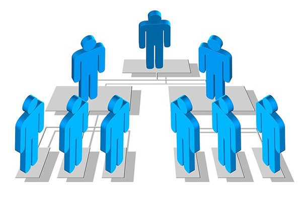

Se define como un sistema de información (SI) al sistema de recogida, almacenamiento y transmisión de información. En términos sencillos, es la interacción de personas y ordenadores para procesar e interpretar unos datos. El término también se utiliza para definir el software que se utiliza para las bases de datos, Pero esta definición se utiliza más a menudo para referirse a todo lo que implica una capa superficial: usuarios, procesos, redes de comunicación, entradas y salidas. El objetivo principal de cualquier sistema de información es apoyar las operaciones, la gestión y la toma de decisiones.
Aquí Podemos conocer los tipos de SI(Sistemas de información) en su nivel Transaccional, nivel de conocimiento, nivel Administrativo y nivel estrategico
 Jerarquia de los niveles de toma de decisiones en SI
Jerarquia de los niveles de toma de decisiones en SI
Objetivo: Proporcionar información crítica a los ejecutivos para la planificación estratégica y la toma de decisiones a largo plazo.
algunos de sus beneficios son:facilitar la toma de decisiones estratégicas informadas, Ayuda a identificar oportunidades y amenazas en el entorno empresarial y Soporta la alineación de objetivos operacionales con estrategias de largo plazo.
Nivel estrategicoObjetivo: Facilitar la creación, organización y compartición del conocimiento y la experiencia dentro de una organización.
Sus beneficios pueden estar de la siguiente manera:El potenciar la innovación y la creatividad; Aumentar la eficiencia al reducir la redundancia de esfuerzos; Y mejorar la capacidad de la empresa para retener conocimientos críticos.
Nivel de conocimientoComo objetivo iene el apoyar la toma de decisiones de gestión mediante la provisión de informes y análisis periódicos basados en datos operacionales.
Algunos de sus beneficios son: La ayuda a los gerentes para evaluar el rendimiento organizacional de la organización, informa decisiones estratégicas y operacionales para que puedan ser ejecutadas, y se encarga de mejorar la comunicación dentro de la empresa. Nivel administrativo
su principal objetivo es facilitar y gestionar las transacciones diarias de una organización de manera eficiente y precisa.
De sus beneficios se pueden destacar: La mejora en la eficiencia operativa, proporciona registros detallados y precisos, y soporta funciones críticas como ventas, nóminas y compras, etc.
Nivel transaccionalEn el nivel transaccional se puede encontrar 5 divisiones importantes por las cual se desarrolla la empresa y son los siguientes: finanzas, contabilidad, manofactura y producción, ventas y marketing y los recursos humanos.
Para conocer de este tema un poco más a detalle de click aquí Tipos SI